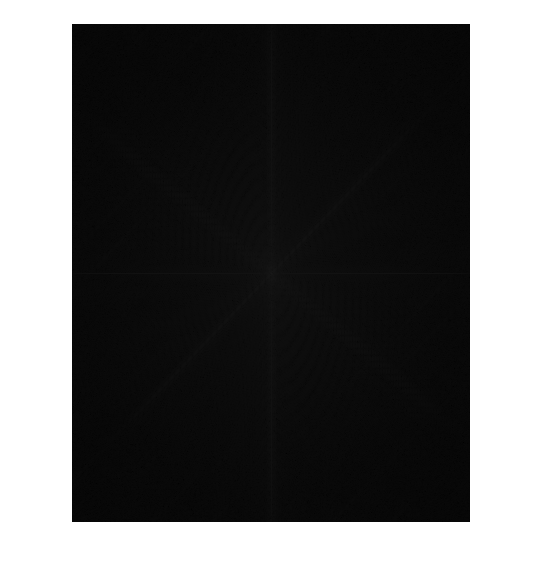
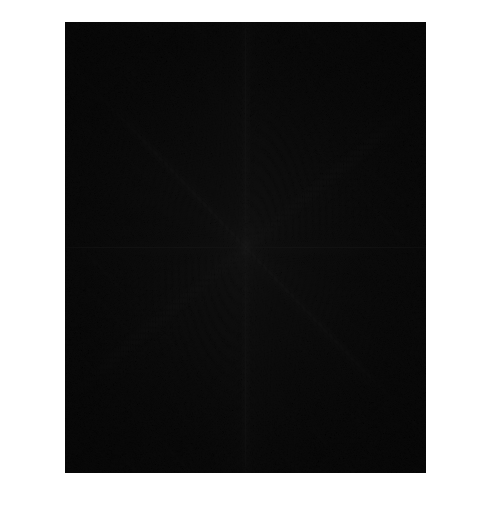

close all clear clc im = imread('/home/sajal/3-1/DIP/Assignments/assignment2/rupee-symbol.jpg'); im = rgb2gray(im); a =2; bit = 4; % if(bit ==1) % figure, % im = double(im); % fftim = abs(fft2(im)); % fftim2 = fftshift((fftim)); % subplot(2,1,1),mesh(fftim2); % maxoriginal = max(max(fftim)); % im1 = a.*im; % fftim1 = abs(fft2(im1)); % fftim3 = fftshift((fftim1)); % subplot(2,1,2),mesh(fftim3); % maxnew = max(max(fftim1)); % ratio = maxnew/maxoriginal; % end % if(bit ==2) % figure, % im = double(im); % fftim = abs(fft2(im)); % fftim2 = fftshift((fftim)); % subplot(2,1,1),mesh(fftim2); % maxoriginal = max(max(fftim)); % im1 = zeros(ceil(size(im)/a)); % for k = 1:size(im,1) % for j = 1:size(im,2) % val = im(k,j); % if((mod(k,a)==0) && (mod(j,a)==0)) % ind1 = k/a; % ind2 = j/a; % im1(ind1,ind2) = val; % end % end % end % fftim1 = abs(fft2(im1)); % fftim3 = fftshift((fftim1)); % subplot(2,1,2),mesh(fftim3); % maxnew = max(max(fftim1)); % ratio = maxnew/maxoriginal; % end % % if(bit ==3) % figure, % im = double(im); % fftim = angle(fft2(im)); % fftim2 = fftshift(fftim); % fftim4 = fftshift(abs(fft2(im))); % m0 = 20; % n0 = -30; % padsize = [abs(m0),abs(n0)]; % im1 = padarray(im,padsize); % % if(n0<0) % for i=size(im,2)-n0:-1:1 % a = im1(:,i); % im1(:,i-n0)=a; % end % % end % % if(m0<0) % for j=size(im,1)-m0:-1:1 % a = im1(j,:); % im1(j-m0,:)=a; % end % % end % % if(n0>0) % for i=n0+1:size(im1,2) % a=im1(:,i); % im1(:,i-n0)=a; % end % end % % if(m0>0) % for j=m0+1:size(im1,1) % a=im1(j,:); % im1(j-m0,:)=a; % end % end % % if(m0 < 0) % imcut1 = -m0:size(im1,1); % else % imcut1 = 1:size(im1,1)-m0; % end % % if(n0 < 0) % imcut2 = -n0:size(im1,2); % else % imcut2 = 1:size(im1,2)-n0; % end % % im2 = im1(imcut1(1):imcut1(end),imcut2(1):imcut2(end)); % % fftim1 = angle(fft2(im2)); % fftim3 = fftshift(fftim2); % fftim5 = fftshift(abs(fft2(im2))); % subplot(2,1,1),mesh(fftim4); % subplot(2,1,2),mesh(fftim5); % end % % % if(bit ==4) %figure, im = double(im); %figure,imshow(uint8(im)) fftim = abs(fft2(im)); fftim2 = fftshift((fftim)); fftim4 = log2(fftim2); figure,imshow(uint8(fftim4)) maxoriginal = max(max(fftim)); for i=1:ceil(size(im,2)*0.5) %a = im(:,i); %b = im(:,size(im,2)-i+1); temp = im(:,size(im,2)-i+1); im(:,size(im,2)-i+1) = im(:,i); im(:,i) = temp; end fftim1 = abs(fft2(im)); fftim3 = fftshift((fftim1)); fftim5 = log2(fftim3); figure,imshow(uint8(fftim5)) maxnew = max(max(fftim1)); ratio = fftim-fftim1; %figure,imshow(uint8(im)) end 